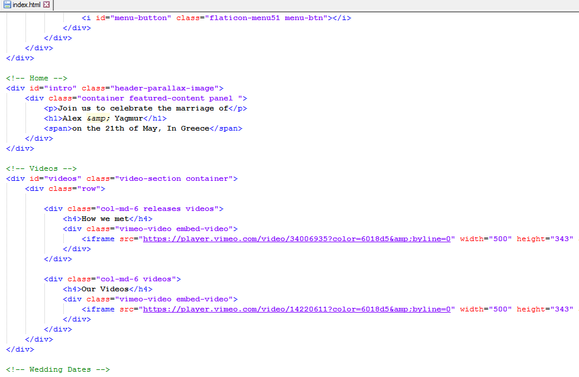

Created: 18/09/2016
By: Moskva Yigit
Thank you for purchasing my theme. If you have any questions that are beyond the scope of this help file, please feel free to email via my user page contact form. Thanks so much!
This theme is a responsive layout with 12 columns (Bootstrap CSS). All of the information within the main content area is nested within a div with an id of "page-wrapper". Inside of any "row" class, you can use 1 - 12 colums. (col-lg-1, col-lg-5, col-lg-12)
I'm using 2 CSS files in this theme connected to main (style.css) file.
The main file (style.css) contains all of the specific stylings for the page. The file is separated into sections using:
/*---------------------------- .-- Imports -----------------------------*/ some code /*---------------------------- .-- Resets -----------------------------*/ some code /*---------------------------- .-- General -----------------------------*/ some code /*---------------------------- .-- Navigation -----------------------------*/ some code etc, etc.
If you would like to edit a specific section of the site, simply find the appropriate label in the CSS file, and then scroll down until you find the appropriate style that needs to be edited.
If you would like to edit the navigation, find the following section in the style sheet:
ul.nav li.dropdown:hover > ul.dropdown-menu{
change style here
}
This theme imports 9 Javascript files.
Most of the scripts are here if you need to change anything. But due to the dynamic structure, you won't need to change any of these codes but some settings such as Google Map, Contact, Twitter, please, see the Settings section.
You need to edit this file to change the twitter settings
Use the example below for dropdown menu
I've used the following images, icons or other files as listed.
Once again, thank you so much for purchasing this theme. As I said at the beginning, I'd be glad to help you if you have any questions relating to this theme. No guarantees, but I'll do my best to assist. If you have a more general question relating to the themes, you might consider visiting the forums and asking your question in the "Item Discussion" section.
Moskva Yigit